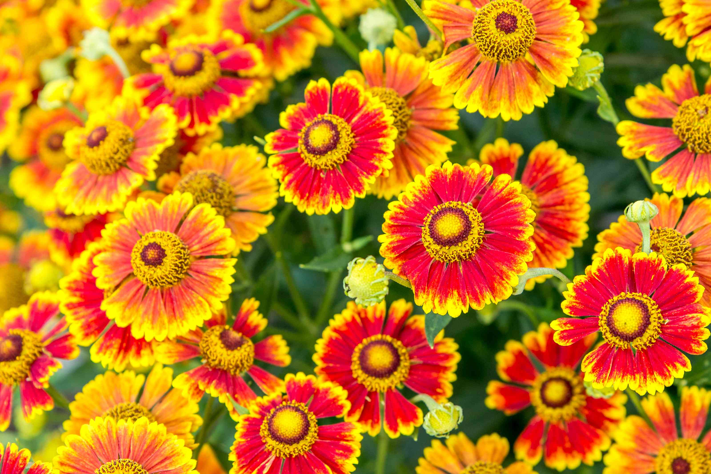
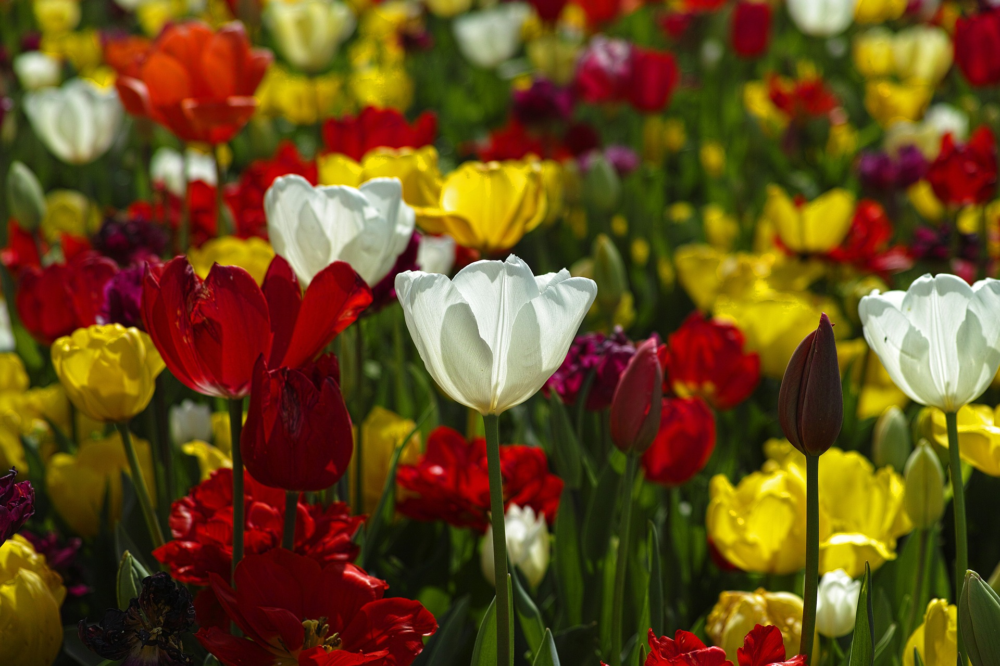

Kako održavati cveće tokom sezona
korisne savete o tome kako pravilno negovati i održavati cveće tokom različitih sezona, od proleća do zime. Naučite kada i kako zalivati, orezivati i zaštititi biljke kako bi uvek bile zdrave i lepe.
Leto
cveće zahteva više pažnje zbog viših temperatura i dužih dana. Važno je redovno zalivanje, ali izbegavajte prekomerno vlaženje koje može dovesti do truljenja korena. Takođe, zaštitite biljke od direktne sunčeve svetlosti tokom najtoplijih sati, a ako je potrebno, obezbedite im malo senke. Redovno odstranjujte suve i oštećene listove, i obratite pažnju na insekte i bolesti koji su češći tokom leta.

Zima
treba držati na mestima sa indirektnom svetlošću i izbegavati promaju. Zalivanje treba smanjiti, proveravajući da je zemlja suva pre nego što se zalije. Izbegavati previše grejanja koje može dovesti do suvoće vazduha, pa koristiti ovlaživače ili povremeno prskati biljke vodom. Neke biljke mogu zahtevati zaštitu korena tokom hladnih meseci.
Jesen
cveće treba početi pripremati za zimu. Smanjite zalivanje kako bi se biljke pripremile za mirniji period rasta. Premestite ih na svetlija mesta, ali izbegavajte direktnu sunčevu svetlost koja može biti previše oštra. Redovno proveravajte biljke na znakove bolesti i štetočina, jer hladniji dani mogu povećati rizik od vlage u zemlji. Neke biljke mogu zahtevati obrezivanje ili smanjenje dužine stabljika.
Proleće
vreme za obnavljanje rasta cveća. Povećajte zalivanje kako bi biljke dobile dovoljno vlage za bujan razvoj. Premestite ih na sunčanija mesta i obezbedite im dobar protok vazduha. Dodajte sveže đubrivo i redovno uklanjajte uvele delove biljaka. Takođe, obratite pažnju na štetočine koje se mogu pojaviti s toplijim vremenom i preduzmite potrebne mere zaštite.
